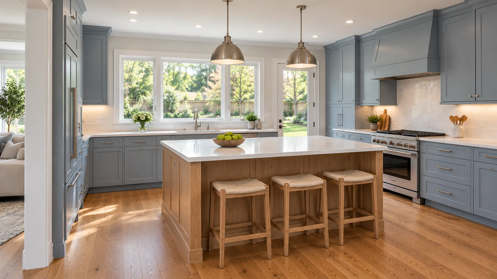

01 / RemodelingAsk about this project
Kitchen Remodeling
Most of the kitchens we remodel are in houses built between the 1940s and the 1970s: small, closed off and short on counter space. Common Ground reworks the layout, opens walls where it makes sense, and plans the cabinets around what you actually cook and store.
Helpful to have ready
Photos of the kitchen, what bugs you about it, and any appliances you’re keeping.
What we’ll go over
Layout options, which walls can move, plumbing and electrical changes, and where you’ll cook while the kitchen is torn out.